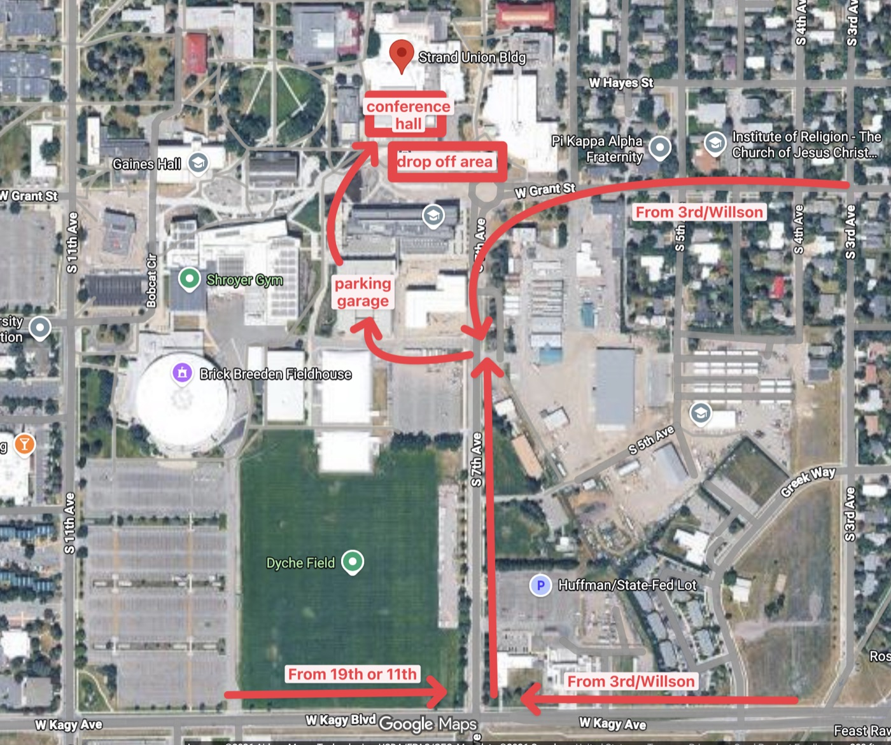

{ Schedule }
Two days · two venues · 16 talks
25-minute talks with short breaks to refuel and mingle. Day 1 is downtown at The Rialto; Day 2 moves to the MSU campus at the Strand Union Building. Times are subject to change.
Day 1 — Friday, July 24
Doors & Check-in
Grab your badge and settle in.
Opening Remarks

Executor, Orchestrator, Leader!
I created it to help early career professionals stay optimistic about the future of computer science. We look at the 1800s, and how the industrial revolution transitioned 80% of jobs from the workforce. Then a look at data-driven projections for this next transition. (BLS/Etc.) Next we talk about some of my lessons in leadership moving from student > researcher > contributer > leader > executive and why this is more important than ever in the age of AI, as we are all responsible for more ideas/labor (Via compute)

Falling in Love with SQL
Let's take a fresh look at an ancient technology: SQL. We all know how to write queries and groupings, updates and inserts. But let's go deeper. Let's take a close look at index structures and execution plans, and see clever ways to query enormous amounts of data, quickly. The skills in this talk will allow you to turn queries that take seconds into queries that take tens of milliseconds—and impress your boss in the process.

htmx View Transitions
This talk is about the power of CSS View Transitions with hardly any additional JavaScript other than pure CSS, HTML, and htmx all via the power of modern browsers! I'll be using Hanami (Ruby) as my web framework to power the slides while using these same slides -- and code -- to explain how all of this works in real-time. You'll not only learn the technical details of how all this works but also learn how easy this is along with new knowledge to apply to your own tech stack! Bonus: I could also bring ePaper devices to render these slides in real-time which could be fun for folks too.
Afternoon Break
20 minutes to stretch and refuel.

JavaScript? In This Economy? (A Love Letter to Tailwind and modern CSS)
We've come a long way on the web, and CSS has become a mini programming language while we weren't looking. This means our CSS can simulate logic that was previously the realm of JavaScript. I plan to show side-by-side examples of how we implemented certain behaviours in the past, and what is now possible with modern CSS primitives, such as :has() and even more so with TailwindCSS classes, e.g., group-has-* classes. Did you know CSS now has if() and @function? It's so over! It's a light-hearted talk, and I hope everyone goes home to (ab)use CSS and delete a lot of their JavaScript.

HTML is not just for the web
HTML is an ideal language to describe and manipulate UIs. To demonstrate: HypeApps is a new framework to develop native-compiled mobile apps using nothing but basic html tags. Apps have native access to camera features driven from the server, with every bit of control and design you would use in a hypermedia -driven web page.
Day 1 Wrap & Closing
Recap, Day 2 logistics (new venue!), and dinner pointers.
Day 2 — Saturday, July 25
Getting to the SUB
Day 2 is at the Strand Union Building — “The SUB” — on the MSU campus. Enter from the south side, head up the stairs, and the conference room is immediately on your right. There’s a drop-off area right in front of the building.
Driving? The Parking Garage off 7th Avenue is your best bet — about $12 for all-day parking. Reach it by taking 7th north from Kagy or south from Grant. From the garage, head north around (or through) Asbjornson Hall; the SUB is the next building to the north.
Heads up: there’s a lot of construction on campus right now, including Gianforte Hall (the new CS building) next to the Parking Garage.

Breakfast & Check-in
Coffee, breakfast, and badge pickup.
Opening Remarks

Hypermedia is for Governments
In the 21st century, the government's ability to deliver services is directly tied to its ability to build websites. Every day, millions of Americans use websites to perform essential civic functions, from renewing their drivers' license to applying for benefits. These websites vary widely in quality and are often frustrating to use. But it doesn't have to be that way! By embracing hypermedia-oriented web development, the public sector can build web services that are great to use, cheap to maintain, and build public trust.

Agentic Engineering for JVM Developers
Coding agents change more than how we write code. They change how we design, guide, and review software. Drawing from my work with Claude Code and Codex, I will share the patterns that made agentic development reliable: durable context, strong feedback loops, guardrails, and structured workflows. You will leave with practical ideas for adapting your JVM projects and your own role to a development process where agents do the implementation.

Your Business Doesn't Fit on a Phone — Neither Should Your Flutter App
Most Flutter developers build for iOS and Android. But the businesses we serve run on dozens of screens — a coffee shop alone needs an app, website, kiosks, POS systems, kitchen displays, and menu boards. In this talk, you'll see a live demo of a full coffee shop platform running across eight screens from a single Flutter codebase, with real-time sync between every device. Then we'll open the hood and walk through the code that makes it work. You'll leave with a wider view of what Flutter can do and a practical understanding of how to get there.

I have no idea what I'm doing
The past two years have been wild. The past six months, disorienting. AI broke the compounding loops that built careers, companies, and experience. It flipped scarcity to abundance, commoditized execution, and made trust the new differentiator. 20 years in this industry, and I have no idea what I’m doing anymore. But I suspect I never really did. This talk sits in that strange, honest place we now occupy as entrepreneurs, developers, and open source contributors.

Lessons from our Hardware on the ISS: Running a Linux Stack Beyond the Cloud(s)
Your archive drive just dropped out in week 1 - in space. What do you do? In orbit, hardware must run 100% hands-free, no exceptions. At Cambrian Works, we build software and hardware designed to survive in space's harsh environment. Our hardened NVIDIA Orin-based GigRouter has been running on the International Space Station since January. Our hardware was tested against vibration, radiation, vacuum and temperature extremes. Find out what we learned, how it applies to your software, see some space data visualizations and find out what happened with the dropped drive.
Lunch
40 minutes — grab lunch and mingle.

Prompt Engineering Isn’t Enough: Building AI Agents You Can Steer
Prompt engineering can get an agent to work in a demo. It isn’t enough to create a reliable agent in production. The issue is control. Prompts are static instructions, but agent behavior is dynamic and agents lose context the longer your prompts are. This session introduces a practical pattern for adding an additional control layer to agent systems: steering. Using the Strands Agents SDK, we’ll walk through how to implement steering hooks. You’ll see how to intercept tool calls before they execute, validate inputs and sequencing, and enforce constraints on outputs after the model responds.

Cognitive Vandalism: What I Learned by Mutilating a GPT
Cognitive Vandalism explores what happens when you intentionally edit pretrained transformer models by removing layers, duplicating them, disabling attention heads, and blending model identities all without retraining. Through live demos, we’ll see how resilient these models really are and what breaking them teaches us about how transformers actually work.
Metaprogramming in Java with Manifold
Static metaprogramming makes code safer, more expressive, and easier to maintain -- yet most static languages, including Java, still rely on conventional code generation. In this session, Scott demonstrates how Manifold enables true compile-time metaprogramming in Java, with examples spanning SQL, JSON, XML, and Java itself. Attendees will learn how to introduce type safety through just-in-time type projection, embrace a schema-first approach, and integrate DSLs -- all without interfering with existing frameworks, tooling, or build performance.

ORMs are Killing Your Performance
Did you know that ORMs thrash CPU caches, destroy garbage collectors, and eliminate database performance? All while eating your server's memory! Did you know that the only reason you need that Redis cache is likely because you're using an ORM? Join me for a talk where I'll break down what's going on under the covers when you use an ORM. We'll see animations showing visually how ORMs destroy your computing resources. Then we'll dive deep into getting more from your database and understand how you can solve this insidious problem!
Afternoon Break
20 minutes to stretch and refuel.

Intro to Compression Techniques
In this session, we will run through a introduction to foundational data compression techniques. We'll gain a basic understanding of how some common compression algorithms work. One powerful technique is prediction. The better you can predict data values, the more effectively you can compress data. We'll demonstrate why this is the case. Prediction, combined with knowledge of your domain-specific data can lead to advancements in compressing data unique to your field.

Real-Time Hypermedia (the htmx way)
The new old way of doing real-time hypermedia. A tour through HTTP, SSE, WebSockets, and polling (Carson’s favourite). How far can the web’s native primitives take you?

htmx 4: what's new
I will go over the changes in htmx 4.x
Closing Remarks
Thank-yous, sponsors, and the wrap.
On-Stage Group Photo
All speakers and organizers on stage — come say hi.